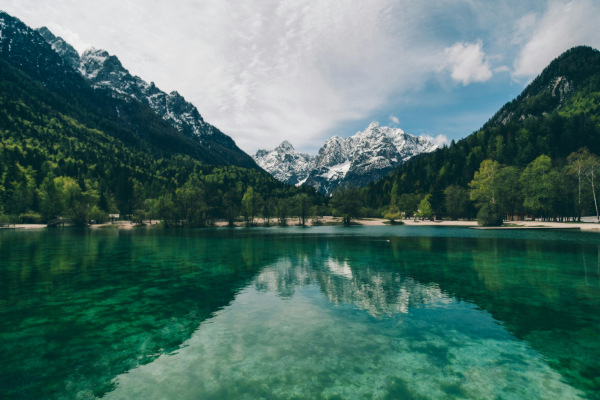

Minha Galeria de Fotos
Uma coleção de momentos, paisagens e lugares incríveis
já registrados em imagens.

Lago Cristalino
Águas transparentes rodeadas por montanhas em um cenário tranquilo.

Cachoeira
Uma bela queda de água cercada pela natureza.
Amanhecer nas Montanhas
Os primeiros raios de sol iluminando as montanhas.
Reflexo da Natureza
Um lago calmo refletindo a beleza da paisagem.
Campos Verdes
Uma paisagem ampla com vegetação exuberante.

Vista Panorâmica
Uma perspectiva ampla destacando a grandiosidade da natureza.
Vida Selvagem
Um registro da fauna em seu ambiente natural.
Entardecer
As cores do fim de tarde refletidas sobre a paisagem.